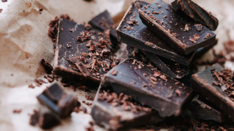
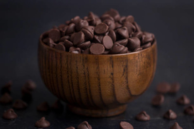
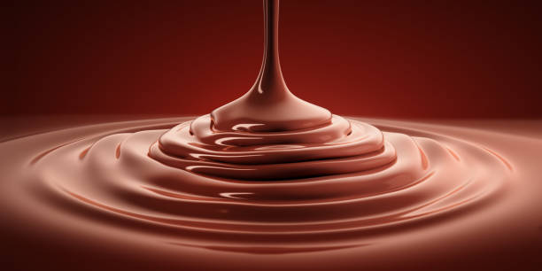

Dark Chocolate

Extremely tasty and more nutritious than other chocolates

Dark chocolate is made with a mixture of cocoa mass, sugar, and usually a little lecithin (which helps keep the mixture homogeneous). The amount of sugar added is less than in milk chocolate, which results in a more intense and bitter flavor. The percentage of cocoa in semisweet chocolate can vary, but it is usually around 60 to 70%. Some chocolate manufacturers may also add vanilla or other flavors to enhance the taste.

Dark chocolate is rich in minerals, such as iron, magnesium, and zinc. The cocoa in dark chocolate also contains antioxidants called flavonoids, which may provide several health benefits. Chocolate comes from cacao, a plant with high levels of minerals and antioxidants.